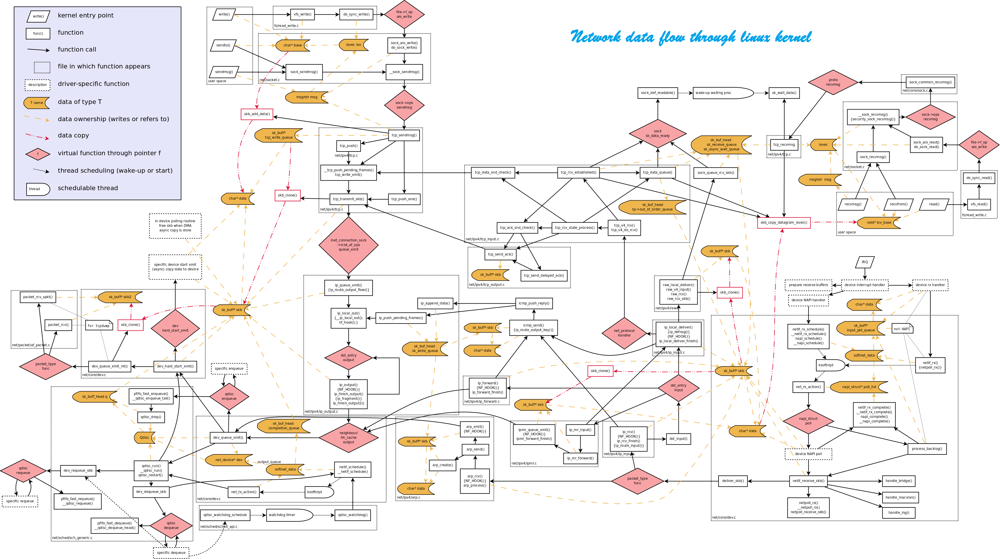

Notes about kernel
Table of Contents
- kernel
kernel
configuration
check config macro in kernel
zcat /proc/config.gz Added:
Networking

MTU
MTU stands for Maximum Transfer Unit (or sometimes also Maximum Transfer Unit). MTU is symmetrical and applies both to receive and transmit. Layer 3 should not pass pass an skb which has payload bigger than an MTU. GSO and TSO are exceptions; in such cases, the device will separate the packet into smaller packets, which are smaller than the MTU.
VLAN
VLAN (Virtual LAN) enables us to partition a physical network. Thus, different broadcast domains are created. This is achieved by inserting VLAN tag into the packet. The VLAN tag is 4 bytes: 2 bytes are Tag Protocol Identifier (TPID), which has a value of 0x8100; 2 bytes are the Tag Control Identifier (TCI). (In linux documentation, TCI is termed "tag control information", see vlan_tci in sk_buff struct, include/linux/sk_buff) The VLAN tag is inserted between the source mac address and ethertype of the eth header. The vlan_insert_tag() method implements this tag insertion (include/linux/if_vlan.h). struct vlan_ethhdr represents vlan ethernet header (ethhdr + vlan_hdr). h_vlan_proto in this struct will get always 0x8100 value. h_vlan_TCI in this struct is the TCI, composed from priority and VLAN ID. vlan_insert_tag() is invoked from the vlan rx handler, vlan_do_receive(). VLAN supports almost everything a regular ethernet interface does, including firewalling, bridging, and of course IP traffic. You will need the 'vconfig' tool from the VLAN project in order to effectively use VLANs.
You can also set vlan/macvlan with "ip" utility: ip link add link p2p1 name p2p1.100 type vlan id 5 ip link add link p2p1 name p2p1#101 address 00:aa:bb:cc:dd:ee type macvlan You can get some info about vlan devices in procfs under: /proc/net/vlan /proc/net/vlan/config (this includes info about vlan id).
For network devices which do not support VLAN TX HW acceleration (the NETIF_F_HW_VLAN_TX flag is not set), we insert the VLAN tag by calling __vlan_put_tag() in dev_hard_start_xmit(). __vlan_put_tag() is a wrapper which calls vlan_insert_tag() (both are in include/linux/if_vlan.h).
Helper methods: int is_vlan_dev(struct net_device *dev) : checks whether the device is a vlan device, by checking the priv_flags of net_device. Defined in include/linux/if_vlan.h bool vlan_uses_dev(const struct net_device *dev) : checks whether is device is used by vlan (by checking whether vlan_info member of the device is null or not). vlan_tx_tag_present(skb) : checks whether the VLAN_TAG_PRESENT flag is set. (Defined in include/linux/if_vlan.h). When we encounter in the RX path packets with vlan tag, the VLAN packets are handled by vlan_do_receive() which is invoked from __netif_receive_skb(). vlan_do_receive() is implemented in net/8021q/vlan_core.c. There are some adapters which support VLAN hardware acceleration offloading. You can get info about VLAN hardware acceleration offloading with ethtool: ethtool -k p2p1
Linux的协议栈自身是不认vlan tag的，vlan tag由8021q部分代码(net/8021q/)做专门处理，这些代 码主要实现了：
- 若干供vlan用户态配置工具vconfig使用的ioctl
- RX时剔除vlan tag，然后递交上层协议栈
- TX时添加适当的vlan tag，然后递交硬件驱动
RX处理如下：
eth0 RX -> eth0 netif_rx -> 8021q代码处理开始 -> 分析vlan tag得vid=n -> 剔除vlan tag -> "skb->dev"指定为eth0.n -> netif_rx -> 8021q代码处理结束 -> packet由eth0.n接收，递交上层协议栈
TX处理如下： eth0.n TX -> 8021q代码处理开始 -> 添加vlan tag，vid=n -> "skb->dev"指定为eth0 -> dev_queue_xmit -> 8021q代码处理结束 -> packet由eth0接收，递交硬件驱动投递
其中eth0.n乃是8021q代码所建立的虚拟接口。比方说把eth0加入vlan3: vconfig add eth0 3 完成后就会出现一个新的接口eth0.3
splice()
With splice(), one can move data from one file descriptor to another without incurring any copies from user space into kernel space, which is usually required to enforce system security and also to keep a simple interface for processes to read and write to files. splice() works by using the pipe buffer. A pipe buffer is an in-kernel memory buffer that is opaque to the user space process. A user process can splice the contents of a source file into this pipe buffer, then splice the pipe buffer into the destination file, all without moving any data through userspace. wiki
TCP
General introduction
RFC 793: http://www.ietf.org/rfc/rfc793.txt MSS = Maximum segment size tcp_sendmsg() is the main handler in the TX path tcp_v4_init_sock(): initialization of the TCP socket is done in net/ipv4/tcp_ipv4.c; invokes tcp_init(). The the congestion sending window size is initialized to 10 (TCP_INIT_CWND). tcp_v4_connect(): create a TCP connection. (net/ipv4/tcp_ipv4.c)
u32 snd_cwnd - the congestion sending window size. u8 ecn_flags - ECN status bits.
ECN
ECN stands for Explicit Congestion Notification.
- TCP_ECN_OK
- TCP_ECN_QUEUE_CWR
- TCP_ECN_DEMAND_CWR
- TCP_ECN_SEEN
There is a configurable procfs tcp_ecn entry: /proc/sys/net/ipv4/tcp_ecn Possible values are: 0 Disable ECN. Neither initiate nor accept ECN. 1 Always request ECN on outgoing connection attempts. 2 Enable ECN when requested by incoming connections but do not request ECN on outgoing connections. Default: 2 see more in Documentation/networking/ip-sysctl.txt
cwnd congestion window size
You can change the TCP initcwnd thus:
ip route change 192.168.1.101 via 192.168.1.10 dev em1 initcwnd 11 Then: ip route
TCP timers
- Keep Alive timer - implemented in tcp_keepalive_timer() in net/ipv4/tcp_timer
- TCP retransmit timer - implemented in tcp_retransmit_timer() in net/ipv4/tcp_timer
- RTO - retransmission timeout.
- RTT - round trip time.
TCP segmentation offload (TSO)
When data greater than the supported maximum transmission unit (MTU) is sent to the network adapter, the data should be divided into MTU sized packets. The adapter takes care of that on behalf of the kernel.
The following command can check the status of this configuration
ethtool -k eth0
Generic Segmentation offload(GSO)
introduction on GSO Gnerially speaking. GSO is focusing on postpone the segamentation to very late phase, just before transmit the packet to driver.
TCP checksum offload
Large receive offload(LRO) and the Generic receive offload(GRO)
GRO is the enhancement on LRO. With GRO mode, napi_gro_receive is used to handling received packet, but not netif_receive_skb or netif_rx 分片报文会被组好以后统一提交给协议栈，而不是一片一片给。这个就是优化。 linux kernel 网络协议栈之GRO(Generic receive offload)
Route
routing cache and fib_trie
LPM (Longest Prefix Match) is the lookup algorithm
Receive a packet
When working in interrupt driven model, the nic registers an interrupt handler with the IRQ with which the device works by calling request_irq().
Interrupt handler
- Will be called in case
- This interrupt handler will be called when a frame is received
- The same interrupt handler will be called when transmission of a frame is finished
- other conditions. (depends on the NIC;sometimes, the interrupt handler will be called when there is some error).
- process in the handler
- Alloc sk_buff by calling dev_alloc_skb()
- eth_type_trans, advance 14bytes for ip header by skb_pull(skb, ETH_HLEN)
- then ip_rcv() in net/ipv4/ip_input.c, this is registed by dev_add_pack or the ipv6_rcv for ipv4 handling
- Handle the protocols registed at init phase like arp_rcv
- in ip_rcv perform sanity check first and then call ip_rcv_finish by NF_HOOK(PF_INET, NF_IP_PRE_ROUTING, skb, dev, NULL,ip_rcv_finish);
- in ip_rcv_finish,
if (skb->dst == NULL) { int err = ip_route_input(skb, iph->daddr, iph->saddr, iph->tos,skb->dev); … } ... return dst_input(skb);- ip_route_input
- Check routing cache
- Call ip_route_input_slow() if not match in cache
- done by fib_lookup()
- return 0 if cache match or successful lookup in routing table
- with the result of fib_lookup, we know the packet is for
1) local delivery rth->u.dst.input=ip_local_deliver; ip_local_deliver(struct sk_buff *skb) (net/ipv4/ip_input.c). -->NF_HOOK(PF_INET, NF_IP_LOCAL_IN, skb,skb->dev,NULL,ip_local_deliver_finish); in ip_local_deliver_finish ipprot->handler(skb); //Deliver the packet to higher protocol according to the type 2) forward rth->u.dst.input = ip_forward; int ip_forward(struct sk_buff *skb) (net/ipv4/ip_forward.c) { if(ttl <=1) { send_icmp_msg(ICMP_EXC_TTL); drop; } decrease ttl; Calls NF_HOOK(PF_INET,NF_IP_FORWARD,skb, skb->dev,rt->u.dst.dev, ip_forward_finish); ip_forward_finish(); -->dst_output(skb) } dst_output(skb) -->skb->dst->output(skb).(see include/net/dst.h) //stats in "netstat -s | grep forwarded" "cat /proc/net/snmp (IPv4) and cat /proc/net/snmp6 (IPV6), and look in ForwDatagrams column (IPv4)/Ip6OutForwDatagrams (IPv6)."
Send a packet
ip_route_output_key();
if(cache miss)
{
ip_route_output_slow()
}
ip_route_output_slow()
-->fib_lookup
//if the packet is for remote host, set
dst->output = ip_output()
ip_output()
-->ip_finish_output()
{
//dst->neighbour->output(skb) arp_bind_neighbour() sees to it that the L2 address of the next hop will be known. (net/ipv4/arp.c)
}
//if the packet is for local machine, set
dst->output = ip_output;
dst->input = ip_local_deliver;
//ip_output() will send the packet on the loopback device,
//Then we will go into ip_rcv() and ip_rcv_finish(), but this time dst is NOT null; so we will end in ip_local_deliver().
// See net/ipv4/route.c
GRO(Generic receive offload)
- Set NETIF_F_GRO to enable it
- napi_gro_receive() is called
- Replace LRO(large receive offload)
- works conjunction with GSO
Multipath routing
CONFIG_IP_ROUTE_MULTIPATH need to be set in kernel building CONFIG_IP_ROUTE_MULTIPATH_CACHED. for multi-path caching
Multicast multicast routing
IGMP
- for IPV4 is supported in net/ipv4/igmp.c
There are three kinds of message
Membership Query (Type: 0x11) Membership Report (Version 2) (Type: 0x16) Leave Group (Type: 0x17)
To add a multicast address at MAC level, you can use "ip maddr add".
Note that "ip maddr add" expects a MAC address, not an IP address! So this is ok: ip maddr add 01:00:5e:01:01:25 dev eth0 but this is wrong: (pay attention, you will not get any error message!) ip maddr add 226.1.2.3
All Mulitcast addresses in mac presentations start with 01:00:5E according to IANA requirements. Multicast addresses are translated from IP notation to mac address by a formula; see ip_eth_mc_map() in include/net/ip.h. This is needed for example in arp translation, arp_mc_map() in net/ipv4/arp.c. The handler for multicast RX is ip_mr_input() in net/ipv4/ipmr.c.
multicast routing
IP_MROUTE=y. in kernel buidling one userspace daemon is also needed, such as pimd, xorp
Netfilter
Netfilter is the kernel layer to support applying iptables rules
- Filtering
- Changing packets (masquerading)
- Connection Tracking
xtables modules are prefixd with xt, eg: net/netfilter/xt_REDIRECT.c Xtables match are always lowercase Xtables targes are always upercase writing netfilter modules we have 5 iptables in use for ipv4
nat table
implemented in net/ipv4/netfilter/iptable_nat.c
- NF_INET_PRE_ROUTING
- NF_INET_POST_ROUTING
- NF_INET_LOCAL_OUT
- NF_INET_LOCAL_IN
REDIRECT is a NAT table target; implemented in net/netfilter/xt_REDIRECT.c
mangle table
implemented in net/ipv4/netfilter/iptable_mangle.c
- NF_INET_PRE_ROUTING
- NF_INET_LOCAL_IN
- NF_INET_FORWARD
- NF_INET_LOCAL_OUT
- NF_INET_POST_ROUTING
TPROXY is a mangle table target; implemented in net/netfilter/xt_TPROXY.c
raw table
implemented in net/ipv4/netfilter/iptable_raw.c
- NF_INET_PRE_ROUTING
- NF_INET_LOCAL_OUT
filter table
net/ipv4/netfilter/iptable_filter.c
- NF_INET_LOCAL_IN
- NF_INET_FORWARD
- NF_INET_LOCAL_OUT
REJECT is example of a filter table target. It is implemented in net/ipv4/netfilter/ipt_REJECT.c. DROP is also a filter table target. Both in DROP and in REJECT we drop the packet. The difference is that with REJECT target we send ICMP packet (port-unreachable is the default) You can set the ICMP type with –reject-with type: it can be icmp-netunreachable, icmp-host-unreach-able, icmp-port-unreachable, icmpproto- unreachable, icmp-net-prohibited, icmp-host-prohibited or icmpadmin- prohibited.
security table
net/ipv4/netfilter/iptable_security.c
- NF_INET_LOCAL_IN
- NF_INET_FORWARD
- NF_INET_LOCAL_OUT
Xtables2
Xt2 replaces the classic iptables setsockopt usage with the new Netlink-based interface user doc about Xtables2 vs. nftables nftables what is the return of nftables nftables quick howto Linux Advanced Routing & Traffic Control HOWTO: http://www.lartc.org/lartc.html
squid and transparent proxy
An iptables rule to work with TPROXY can be for example: iptables -t mangle -A PREROUTING -p tcp --dport 80 -j TPROXY --tproxy-mark 0x1/0x1 --on-port 3128 --tproxy-mark 0x1/0x1 is for setting skb->mark in the TPROXY module
netfilter hooks
registe by nf_register_hook() in net/netfilter/core.c
example of iptables Applying the following iptables rule: iptables A INPUT p udp dport 9999 j DROP This is NF_IP_LOCAL_IN rule; The packet will go to: ip_rcv() and then: ip_rcv_finish() And then ip_local_deliver() but it will NOT proceed to ip_local_deliver_finish() as in the usual ase, without this rule. As a result of applying this rule it reaches nf_hook_slow() with verdict == NF_DROP (calls skb_free() to free the packet) See net/netfilter/core.c. iptables -t mangle A PREROUTING -p udp -dport 9999 -j MARK -setmark 5 Applying this rule will set skb->mark to 0x05 in ip_rcv_finish().
Neighboring
ARP
cat /proc/net/arp
ND(neighbor discovery)
Network namespaces
A network namespace is logically another copy of the network stack, with it's own routing tables, neighboring tables, firewall rules, sockets and network devices see include/net/net_namespace.h introduction on namespace
Bonding Driver (Link aggregation)
The bonding network driver is for putting multiple physical ethernet devices into one logical one, what is often termed link aggregation/trunking/Link bundling/Ethernet/network/NIC bonding. (these terms can be considered as synonyms). The new generation of the bonding driver is called teaming. It has also a user space part called libteam.
ifenslave is an iputils package. You can set link aggregation with ifenslave like in the following example: modprobe bonding mode=balance-alb miimon=100 ifconfig bond0 192.168.1.1 ifenslave bond0 eth0 ifenslave bond0 eth1 You can set vlan device over a bonding interface; For example, on the bond0 you created, you configure a vlan thus: vconfig add bond0 100
code at drivers/net/bonding, maintained by Jay Vosburgh and Andy Gospodarek
Teaming network device
at drivers/net/team
Teaming network device is in fact the new bonding driver. Teaming network device is for putting multiple physical ethernet devices into one logical one, what is often termed link aggregation/trunking/Link bundling/Ethernet/network/NIC bonding. (these terms can be considered as synonyms). Team has also a user-space util, libteam. The team driver registers an RX handler by netdev_rx_handler_register(). The handler is team_handle_frame(). This is common in a virtual driver; also the bonding driver registers an RX handler named bond_handle_frame() and also the bridge driver registers a handler named br_handle_frame(). These handlers are invoked in __netif_receive_skb() (net/core/dev.c)
Tracing with kernel events
Enabling tracing via kernel events
Example: In dev_hard_start_xmit() there are two identical calls to trace_net_dev_xmit(). In case we want a log with these traces, we should do the following; /sys/kernel/debug should be mounted with debugfs. echo 1 > /sys/kernel/debug/tracing/tracing_enabled echo 1 > events/net/net_dev_xmit/enable The traced calls will appear in /sys/kernel/debug/tracing We can stop the tracing of net_dev_xmit() by echo 0 > events/net/net_dev_xmit/enable Note: you can add a stacktrace to the trace log by echo stacktrace > /sys/kernel/debug/tracing/trace_options More info in http://lxr.free-electrons.com/source/Documentation/trace/events.txt
Socket
From userspace
Creating a socket from user space is done by the socket() system call. On success, a file descriptor for the new socket is returned. The first parameter, family, is also sometimes referred to as “domain”. The family is PF_INET for IPV4 or PF_INET6 for IPV6. The family is PF_PACKET for Packet sockets, which operate at the device driver layer. (Layer 2).
- PF_PACKET sockets are used, for example, in pcap library for Linux. pcap library is in use by sniffers such as tcpdump or wireshark.
- SOCK_STREAM for TCP, SCTP
- SOCK_DGRAM for UDP
- SOCK_RAW for RAW sockets
For every socket which is created by a userspace application, there is a corresponding socket struct and sock struct in the kernel. This system call eventually invokes the sock_create() method in the kernel.
- struct socket and sock
include/linux/net.hstruct socket has only 8 members; struct sock has more than 20, and is one of the biggest structures in the networking stack. You can easily be confused between them. So the convention is this:
- sock always refers to struct socket.
- sk always refers to struct sock.
The sk_protocol member of struct sock equals to the third parameter (protocol) of the socket() system call. struct sock has three queues:
- sk_receive_queue for rx
- sk_write_queue for tx
- sk_error_queue for errors
- skb_queue_tail() : Adding to the queue
- skb_dequeue() : removing from the queue
- For the error queue: sock_queue_err_skb() adds to its tail (include/net/sock.h). Eventually, it also calls skb_queue_tail().
- UDP&TCP
- Receive
Most of the Internet traffic is TCP (like http, ssh). UDP is for audio/video (RTP)/streaming Note:- streaming with VLC is by UDP (RTP)
- streaming via YouTube is tcp (http)
For DHCP, it is quite natural to be UDP (Since many times with DHCP, you don't have a source address, which is a must for TCP)
recv() (when the socket is connected) recvfrom() recvmsg() All three are handled by udp_recvmsg() in the kernel. For example, suppose you have a client-server udp applications, and the server sends a packets which is longer then what the client had allocated for input buffer. The kernel then truncates the packet, and set MSG_TRUNC flag. In order to retrieve it, you should use something like: recvmsg(udpSocket, &msg, flags); if (msg.msg_flags & MSG_TRUNC) printf("MSG_TRUNC\n");There was a suggestion recently for recvmmsg() system call for receiving multiple messages (By Arnaldo Carvalho de Melo). The recvmmsg() meant to reduce the overhead caused by multiple system calls of recvmsg() in the usual case. udp_rcv() is the handler for all UDP packets. It handles all incoming packets in which the protocol field in the ip header is IPPROTO_UDP (17).
See the udp_protocol definition: (net/ipv4/af_inet.c) struct net_protocol udp_protocol = { .handler = udp_rcv, .err_handler = udp_err, };In the same way we have:
- raw_rcv() as a handler for raw packets
- tcp_v4_rcv() as a handler for TCP packets
- icmp_rcv() as a handler for ICMP packets
- igmp_rcv as a handler for igmp packet
/* * Add all the base protocols. */ if (inet_add_protocol(&icmp_protocol, IPPROTO_ICMP) < 0) printk(KERN_CRIT "inet_init: Cannot add ICMP protocol\n"); if (inet_add_protocol(&udp_protocol, IPPROTO_UDP) < 0) printk(KERN_CRIT "inet_init: Cannot add UDP protocol\n"); if (inet_add_protocol(&tcp_protocol, IPPROTO_TCP) < 0) printk(KERN_CRIT "inet_init: Cannot add TCP protocol\n"); #ifdef CONFIG_IP_MULTICAST if (inet_add_protocol(&igmp_protocol, IPPROTO_IGMP) < 0) printk(KERN_CRIT "inet_init: Cannot add IGMP protocol\n"); #endifprotocol handler is registed with proto_register()
static int __init inet_init(void) { . . . rc = proto_register(&tcp_prot, 1); if (rc) goto out_free_reserved_ports; rc = proto_register(&udp_prot, 1); if (rc) goto out_unregister_tcp_proto; rc = proto_register(&raw_prot, 1); if (rc) goto out_unregister_udp_proto; rc = proto_register(&ping_prot, 1); if (rc) goto out_unregister_raw_proto; struct proto udp_prot = { .name = "UDP", .owner = THIS_MODULE, .close = udp_lib_close, .connect = ip4_datagram_connect, .disconnect = udp_disconnect, .ioctl = udp_ioctl, .destroy = udp_destroy_sock, .setsockopt = udp_setsockopt, .getsockopt = udp_getsockopt, .sendmsg = udp_sendmsg, .recvmsg = udp_recvmsg, .sendpage = udp_sendpage, .backlog_rcv = __udp_queue_rcv_skb, .hash = udp_lib_hash, .unhash = udp_lib_unhash, .rehash = udp_v4_rehash, .get_port = udp_v4_get_port, .memory_allocated = &udp_memory_allocated, .sysctl_mem = sysctl_udp_mem, .sysctl_wmem = &sysctl_udp_wmem_min, .sysctl_rmem = &sysctl_udp_rmem_min, .obj_size = sizeof(struct udp_sock), .slab_flags = SLAB_DESTROY_BY_RCU, .h.udp_table = &udp_table, #ifdef CONFIG_COMPAT .compat_setsockopt = compat_udp_setsockopt, .compat_getsockopt = compat_udp_getsockopt, #endif .clear_sk = sk_prot_clear_portaddr_nulls, }; EXPORT_SYMBOL(udp_prot);Stats about UDP
netstat -s ..... Udp: 35 packets to unknown port received or cat /proc/net/snmp | grep Udp: Udp: InDatagrams NoPorts InErrors OutDatagrams RcvbufErrors SndbufErrors Udp: 14 35 0 30 0 0
If there is a sock listening on the destination port, Call udp_queue_rcv_skb(). Eventually calls sock_queue_rcv_skb(). Which adds the packet to the sk_receive_queue by skb_queue_tail().
udp_recvmsg(): --> __skb_recv_datagram() , for receiving one sk_buff.
The __skb_recv_datagram() may block. Eventually, what __skb_recv_datagram() does is read one sk_buff from the sk_receive_queue queue memcpy_toiovec() performs the actual copy to user space by invoking copy_to_user().
Receive summarize
ip_rcv -->...ip_local_deliver_finish //this has been traced in the section receive packet -->udp_rcv -->__udp_queue_rcv_skb -->ip_queue_rcv_skb -->sock_queue_rcv_skb -->__skb_queue_tail //packet is added at the tail of the sk_receive_queue
udp_recvmsg -->__skb_recv_datagram -->skb_peek //read one sk_buff from the sk_receive_queue
- Send
From user space, you can send udp traffic with three system calls:- send() (when the socket is connected).
- sendto()
- sendmsg()
All these system calls are handled by udp_sendmsg in kernel udp_sendmsg() is much simpler than the tcp parallel method , tcp_sendmsg().
udp_sendpage() is called when user space calls sendfile() (to copy a file into a udp socket). – sendfile() can be used also to copy data between one file descriptor and another. udp_sendpage() invokes udp_sendmsg()
- Receive
From kernel
IO
Scatter-gather
Scatter-gather DMA
scatter gather DMA is a way compare with block DMA to transmit data. In DMA mode to transmit data, the phsical address is needed to be continuasly, if the phsical address is not continously, the transmision will be divided into many parts. Interrupt will be trigger to host for next piece of memory transmission. Scatter gather don't need this interrupt, DMA engine can transmit packet with a list of memory pieces. The feature flag is NETIF_F_SG
# cat /sys/devices/virtual/net/rnchanet/features 0x803
#define NETIF_F_SG 1 /* Scatter/gather IO. */
#define NETIF_F_IP_CSUM 2 /* Can checksum TCP/UDP over IPv4. */
#define NETIF_F_NO_CSUM 4 /* Does not require checksum. F.e. loopack. */
#define NETIF_F_HW_CSUM 8 /* Can checksum all the packets. */
#define NETIF_F_IPV6_CSUM 16 /* Can checksum TCP/UDP over IPV6 */
#define NETIF_F_HIGHDMA 32 /* Can DMA to high memory. */
#define NETIF_F_FRAGLIST 64 /* Scatter/gather IO. */
#define NETIF_F_HW_VLAN_TX 128 /* Transmit VLAN hw acceleration */
#define NETIF_F_HW_VLAN_RX 256 /* Receive VLAN hw acceleration */
#define NETIF_F_HW_VLAN_FILTER 512 /* Receive filtering on VLAN */
#define NETIF_F_VLAN_CHALLENGED 1024 /* Device cannot handle VLAN packets */
#define NETIF_F_GSO 2048 /* Enable software GSO. */
#define NETIF_F_LLTX 4096 /* LockLess TX - deprecated. Please */
/* do not use LLTX in new drivers */
#define NETIF_F_NETNS_LOCAL 8192 /* Does not change network namespaces */
#define NETIF_F_GRO 16384 /* Generic receive offload */
#define NETIF_F_LRO 32768 /* large receive offload */
/* the GSO_MASK reserves bits 16 through 23 */
#define NETIF_F_FCOE_CRC (1 << 24) /* FCoE CRC32 */
#define NETIF_F_SCTP_CSUM (1 << 25) /* SCTP checksum offload */
#define NETIF_F_FCOE_MTU (1 << 26) /* Supports max FCoE MTU, 2158 bytes*/
/* Segmentation offload features */
#define NETIF_F_GSO_SHIFT 16
#define NETIF_F_GSO_MASK 0x00ff0000
#define NETIF_F_TSO (SKB_GSO_TCPV4 << NETIF_F_GSO_SHIFT)
#define NETIF_F_UFO (SKB_GSO_UDP << NETIF_F_GSO_SHIFT)
#define NETIF_F_GSO_ROBUST (SKB_GSO_DODGY << NETIF_F_GSO_SHIFT)
#define NETIF_F_TSO_ECN (SKB_GSO_TCP_ECN << NETIF_F_GSO_SHIFT)
#define NETIF_F_TSO6 (SKB_GSO_TCPV6 << NETIF_F_GSO_SHIFT)
#define NETIF_F_FSO (SKB_GSO_FCOE << NETIF_F_GSO_SHIFT)
/* List of features with software fallbacks. */
#define NETIF_F_GSO_SOFTWARE (NETIF_F_TSO | NETIF_F_TSO_ECN | NETIF_F_TSO6)
#define NETIF_F_GEN_CSUM (NETIF_F_NO_CSUM | NETIF_F_HW_CSUM)
#define NETIF_F_V4_CSUM (NETIF_F_GEN_CSUM | NETIF_F_IP_CSUM)
#define NETIF_F_V6_CSUM (NETIF_F_GEN_CSUM | NETIF_F_IPV6_CSUM)
#define NETIF_F_ALL_CSUM (NETIF_F_V4_CSUM | NETIF_F_V6_CSUM)
/*
* If one device supports one of these features, then enable them
* for all in netdev_increment_features.
*/
#define NETIF_F_ONE_FOR_ALL (NETIF_F_GSO_SOFTWARE | NETIF_F_GSO_ROBUST | \
NETIF_F_SG | NETIF_F_HIGHDMA | \
NETIF_F_FRAGLIST)